Обучение по детской психологии — это возможность получить знания и навыки для работы с детьми, их развитием и эмоциональным состоянием. Профессия детского психолога требует специальной подготовки, так как работа связана с поддержкой ребенка в сложных ситуациях, диагностикой и коррекцией поведения. Курсы и программы обучения помогают освоить современные методики, узнать о психологии возраста и построить практику, востребованную в детских садах, школах и центрах. Чтобы выбрать подходящий путь, мы составили рейтинг направлений и вариантов обучения на детского психолога, учитывая доступность, качество и перспективы применения знаний на практике.
Информация обновлена:
ТОП онлайн-курсов обученияпо детской психологии
- 🏆 Детский психолог — Московский институт психологии
- 🏆 «Практическая психология детей и подростков» с присвоением квалификации «Детский психолог» — Национальная академия дополнительного профессионального образования
- 🏆 Детский психолог + MBA — Московский институт профессионального образования
- Детский психолог с изучением детской нейропсихологии — Онлайн Институт Smart
- Детский психолог — Психодемия
- Детский психолог + MBA — Московский институт профессионального образования
- Детская психология. Практическая психологическая помощь детям и подросткам — АНО «НИИДПО»
- Детская психология — Московский институт технологий и управления
- Детский психолог — Московская школа прикладной психологии (МШПП)
- Детский психолог. Работа с детьми и подростками — Институт профессионального образования
- Детская психология. Практическая помощь детям и подросткам — Национальный центральный институт развития дополнительного образования
- Детская психология. Практическая психологическая помощь детям и подросткам — Центральная академия профессиональной переподготовки и повышения квалификации кадров
- Профессия Детский психолог — Международная школа профессий
- Детский психолог — Учебный центр АПОК
- Детский психолог — Учебный центр дополнительного профессионального образования ЭКОДПО
- Профессиональная переподготовка на детского психолога — Учебный центр «НЦПО»
Отличительные преимущества каждой дистанционной программы обучения по детской психологии
| № | Курс и школа | Отличительные преимущества | Действие |
|---|---|---|---|
| 🥇 | Детский психолог — Московский институт психологии | 10 мес, 1400 ак. ч.; сильный практический блок (кейсы, проекты, супервизии); международное приложение к диплому; партнёрство с ОППЛ; акцент на арт-терапию и семейное консультирование. | Перейти |
| 🥈 | «Практическая психология детей и подростков» с присвоением квалификации «Детский психолог» — Национальная академия дополнительного профессионального образования | Крупная скидка (до 65%); 979 ч. практики + супервизии; диплом гособразца + международный MBA (Чехия) и сертификат HiSTES; киноклуб/книгоклуб; поддержка HR-наставников и поиск клиентов во время обучения. | Перейти |
| 🥉 | Детский психолог + MBA — Московский институт профессионального образования | Сразу три диплома (Детская психология, MBA: Business Psychology, Психология); длительность 15 мес для углубления; сильный блок по семейному консультированию; поддержка кураторов и удобная рассрочка. | Перейти |
| 4 | Детский психолог с изучением детской нейропсихологии — Онлайн Институт Smart | Фокус на нейропсихологии; 1300+ ч., от 15 мес; практика: терапевтические тройки, групповые супервизии; дипломы: гособразца + MBA (Чехия) + HISTES (Гамбург); карьерный центр и первые клиенты от института. | Перейти |
| 5 | Детский психолог — Психодемия | Научный руководитель — Александр Покрышкин (Play Therapy Russia, ВШЭ); до 40% практики, «аквариумные» занятия и мини-группы; гибкая длительность (9–20 мес); сертификат при отсутствии высшего образования. | Перейти |
| 6 | Детский психолог + MBA — Московский институт профессионального образования | Комбинация переподготовки и MBA; 1 год 3 мес; регистрация в ФИС ФРДО; сильная команда практиков (КПТ, гештальт, арт-терапия); удобные тарифы с рассрочкой до 24 мес. | Перейти |
| 7 | Детская психология. Практическая психологическая помощь детям и подросткам — АНО «НИИДПО» | Короткий интенсив: 12 недель; бюджетная цена с рассрочкой 0%; карьерный центр и поддержка продвижения; доступ к базе вебинаров и материалам после окончания; доп. сертификат компетенций. | Перейти |
| 8 | Детская психология — Московский институт технологий и управления | Длительная программа 1 год / 1800 ч.; КПТ-эксперты среди преподавателей; супервизии и практикумы; налоговый вычет 13%; акцент на диагностику и кризисную помощь. | Перейти |
| 9 | Детский психолог — Московская школа прикладной психологии (МШПП) | 1010 ак. ч., из них 280 ч. практики; возможен международный диплом MBA; очные занятия + дистанционный формат; карьерный центр МШПП; программа от 50+ практикующих экспертов. | Перейти |
| 10 | Детский психолог. Работа с детьми и подростками — Институт профессионального образования | Сбалансированный курс ~7 мес (586 ч.); сильный блок арт-/песочной терапии; карьерные консультации и помощь с резюме; практико-ориентированный формат с реальными кейсами по семейной динамике. | Перейти |
| 11 | Детская психология. Практическая помощь детям и подросткам — Национальный центральный институт развития дополнительного образования | Интенсив 3 мес / 450 ч.; доступ к ЛитРес и «Библиоклуб»; упор на подростковую психотерапию и нейропсихологию; широкая рассрочка до 36 мес; налоговый вычет 13%. | Перейти |
| 12 | Детская психология. Практическая психологическая помощь детям и подросткам — Центральная академия профессиональной переподготовки и повышения квалификации кадров | Заочный дистанционный формат 3 мес / 450 ч.; документы вносятся в ФИС ФРДО; бессрочный доступ к аудиолекциям и библиотеке; HR-наставник помогает с поиском вакансий. | Перейти |
| 13 | Профессия Детский психолог — Международная школа профессий | Доступная стоимость; интенсив 20 недель (76 ак. ч.); акцент на практику: диагностика, нейрокоррекция, арт-терапия; поддержка кураторов; быстрое входжение в частную практику. | Перейти |
| 14 | Детский психолог — Учебный центр АПОК | Гибкая длительность 1–5 мес (от 250 ч.); бесплатная доставка диплома по РФ; регистрация в ФИС ФРДО; персональные консультации; индивидуальные учебные траектории. | Перейти |
| 15 | Детский психолог — Учебный центр дополнительного профессионального образования ЭКОДПО | Быстрый старт от 1,5 мес (от 250 ч.); диплом с внесением в ФИС ФРДО; 0% рассрочка и пост-доступ к материалам; опция VIP с индивидуальными онлайн-занятиями. | Перейти |
| 16 | Профессиональная переподготовка на детского психолога — Учебный центр «НЦПО» | Бюджетная цена и рассрочка; 250–500 ч., очно/заочно/дистанционно; диплом бессрочного действия с внесением в ФРДО; акцент на семейную терапию и консультирование родителей. | Перейти |
1. 🏆 Детский психолог — Московский институт психологии
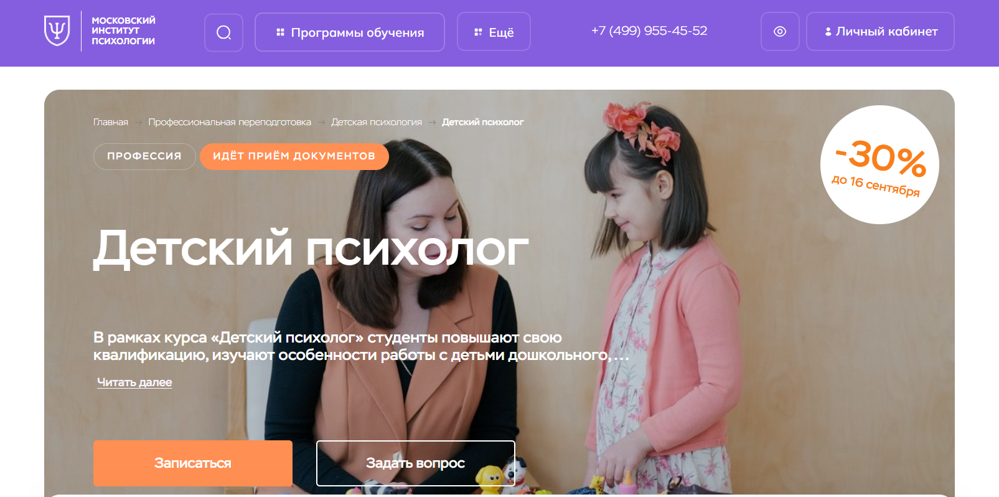- ✅ Официальный сайт: mip.institute
- 💸 Цена обучения: 109 989 ₽ (со скидкой 30% до 157 000 ₽).
- 💳 Рассрочка: беспроцентная на 12 месяцев, платеж от 9 200 ₽/мес.
- 📚 Формат: дистанционное обучение — лекции, тесты, демонстрации, домашние задания, проекты, доступ к библиотеке.
- ⏳ Продолжительность: 10 месяцев, 1400 академических часов.
- 📜 Документ: диплом о профессиональной переподготовке установленного образца.
- 📝 Трудоустройство: возможность вести частную практику, работать в образовательных и психологических центрах.
- 🔷 Для кого подходит курс: начинающим в психологии, практикующим без диплома, педагогам и тем, кто хочет помогать детям и их родителям.
Особенности:
Программа выстроена в дистанционном формате обучения с использованием онлайн-платформы, что дает возможность совмещать учебу с работой. Студенты получают не только теоретические знания, но и практические навыки консультирования, диагностики и коррекции поведения детей. Учебный процесс построен на реальных кейсах, групповых проектах и супервизиях. Доступ к материалам сохраняется на протяжении всего периода обучения. Преподавание ведут опытные специалисты, а выпускникам выдается диплом, который подтверждает право оказывать психологическую помощь. Курс включает аспекты детской и возрастной психологии, элементы клинической практики, семейное консультирование и арт-терапию. Такой подход позволяет освоить профессию и получить востребованные навыки для успешной карьеры детского психолога.
Чему учатся студенты:
- Понимать психофизиологические особенности ребенка на разных возрастных этапах
- Применять методы диагностики и коррекции поведения
- Выстраивать взаимодействие с родителями и педагогами
- Использовать арт-терапию и песочную терапию в работе
- Проводить психологическую консультацию и сопровождение детей и подростков
- Оказывать психологическую поддержку семьям и детям с особыми образовательными потребностями
Преподаватели:
- Сергачева Ксения Викторовна: практикующий психолог, сертифицированный гештальт-терапевт, арт-терапевт, преподаватель и автор методических пособий, 24 года стажа.
- Гиль Людмила Владимировна: телесно-ориентированный психолог, реабилитолог, специалист по сказкотерапии, метафорическим картам и арт-терапии, член МПАП, 7 лет стажа.
Преимущества:
- Дистанционное обучение в удобном формате с доступом к материалам в любое время
- Поддержка кураторов и преподавателей в процессе обучения
- Возможность совмещать учебу с работой и личными делами
- Международное приложение к диплому и признание работодателями
- Партнерство института с ОППЛ — гарантия качества подготовки
- Фокус на практических навыках и разборе реальных кейсов
Отзывы учеников:
Студенты отмечают удобный формат дистанционного обучения и доступные материалы. Положительно оценивают профессионализм преподавателей и поддержку кураторов. Многие подчеркивают ценность практических заданий, возможность применять знания в работе и личной жизни, а также быстрый карьерный рост после завершения курсов.
Перейти на официальный сайт курса2. 🏆 «Практическая психология детей и подростков» с присвоением квалификации «Детский психолог» — Национальная академия дополнительного профессионального образования
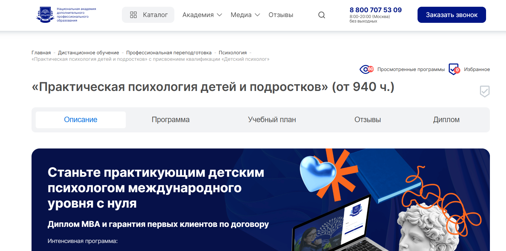- ✅ Официальный сайт: nadpo.ru
- 💸 Цена обучения: от 62 600 ₽ (178 900 ₽ — полная стоимость, действует скидка 65%).
- 💳 Рассрочка: 0%, ежемесячные платежи от 5 217 ₽.
- 📚 Формат: дистанционные занятия, видеолекции, практические задания, супервизии, киноклуб, книгоклуб, доступ к библиотекам.
- ⏳ Продолжительность: от 8 месяцев (от 940 академических часов).
- 📜 Документ: диплом о профессиональной переподготовке государственного образца, международный диплом MBA (Чехия), сертификат HiSTES.
- 📝 Трудоустройство: консультации HR-наставников, помощь в поиске первых клиентов, предложения от партнёров во время обучения.
- 🔷 Для кого подходит курс: для новичков, желающих освоить профессию детского психолога с нуля, и практикующих специалистов, которым важна новая специализация.
Особенности:
Программа построена по формату дистанционного обучения, что позволяет совмещать учебу с работой или личным графиком. Студенты проходят 979 часов практики, включая работу с реальными кейсами и участие в групповых супервизиях. Большое внимание уделяется психологическому консультированию детей и подростков, изучению возрастных особенностей и освоению навыков консультирования родителей. Обучение сопровождают опытные преподаватели и кураторы, что гарантирует поддержку на всех этапах прохождения курсов. Студенты получают доступ к дополнительным образовательным материалам, а формат дистанционного образования позволяет учиться из любой точки мира. По окончании обучения выдается диплом установленного образца, который внесен в государственный реестр.
Чему учатся студенты:
- Изучают возрастную психологию и аспекты детской психики
- Осваивают методы психологической диагностики и коррекции поведения
- Учутся проводить психологическую консультацию и семейное консультирование
- Изучают основы клинической психологии и детской нейропсихологии
- Получают практические навыки по методам арт-терапии и психотерапии
- Научатся применять современные методики диагностики и коррекции в консультировании родителей и детей
Преподаватели:
- Тарасов Сергей Васильевич — кандидат психологических наук, доцент, опыт работы с 2000 года
- Егорова Наталья Николаевна — кандидат психологических наук, 22 года практического опыта
- Челнокова Ирина Александровна — кандидат психологических наук, член Российской ассоциации КПТ, практикующий специалист с 2008 года
- Санжапова Эльмира Викторовна — кандидат педагогических наук, доцент, практикующий клинический психолог с 2005 года
Преимущества:
- Возможность учиться дистанционно в удобном формате
- Доступ к учебным материалам, лекциям и дополнительным ресурсам онлайн
- Диплом внесен в ФИС ФРДО и признается на всей территории РФ
- Программа включает практику с реальными клиентами и супервизии
- Поддержка преподавателей и кураторов в ходе обучения
- Помощь в построении карьеры и поиск первых клиентов
- Международное признание диплома и дополнительный сертификат HiSTES
Отзывы учеников:
Студенты отмечают удобный график обучения и возможность совмещать его с работой. Чаще всего выделяют высокий уровень преподавателей и практическую направленность программы. Многие пишут о ценности реальных кейсов и обратной связи от специалистов. Также положительно оценивают помощь в трудоустройстве и возможность получить диплом международного уровня.
Перейти на официальный сайт курса3. 🏆 Детский психолог + MBA — Московский институт профессионального образования
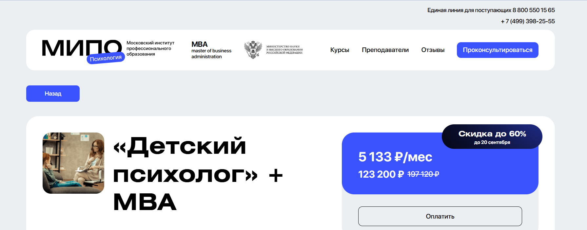- ✅ Официальный сайт: mipoin.ru
- 💸 Цена обучения: 197 120 ₽ (со скидкой 123 200 ₽).
- 💳 Рассрочка: доступна от 5 133 ₽ в месяц.
- 📚 Формат: дистанционный формат обучения: видеолекции, практические задания, тесты, консультации с кураторами.
- ⏳ Продолжительность: 15 месяцев.
- 📜 Документ: три диплома о профессиональной переподготовке: «Детская психология», «Master of business administration: Business Psychology», «Психология».
- 📝 Трудоустройство: возможность работать практикующим психологом, вести семейное консультирование и индивидуальную практику.
- 🔷 Для кого подходит курс: для педагогов, начинающих психологов, специалистов в сфере образования и тех, кто планирует освоить профессию детского психолога.
Особенности:
Программа разработана в удобном формате дистанционного обучения, что позволяет совмещать учебу с работой и личными делами. Студенты учатся у опытных преподавателей, получают поддержку кураторов и доступ к образовательной платформе с материалами в личном кабинете. Курсы включают освоение практических навыков психологического консультирования, проведение психологической диагностики и изучение методов коррекции поведения. Обучение строится на сочетании теоретического материала и практических заданий. Выпускники получают дипломы установленного образца и квалификацию, которая открывает перспективы в карьере детского психолога. Дистанционный формат обучения подходит слушателям из любых регионов и позволяет учиться в удобное время.
Чему учатся студенты:
- Проводить психологическую консультацию детям и родителям
- Освоить методы психологической диагностики и коррекции поведения
- Изучать аспекты детской и возрастной психологии
- Научиться применять методы семейной терапии и консультирования родителей
- Освоить навыки практического консультирования подростков
Преподаватели:
- Опытные специалисты института, практикующие психологи с большим стажем работы
- Клинические психологи и эксперты в сфере детской психологии
- Преподаватели с ученой степенью и практическим опытом консультирования
Преимущества:
- Дистанционный формат позволяет учиться дистанционно из любой точки страны
- Три диплома и две квалификации по завершению обучения
- Освоите навыки практической работы с детьми и родителями
- Доступ к учебным материалам и поддержке преподавателей на протяжении курса
- Возможность совмещать обучение с профессиональной деятельностью
- Скидка до 60% при ранней оплате
Отзывы учеников:
Студенты отмечают удобный формат обучения и возможность совмещать учебу с работой. Подчеркивают профессионализм преподавателей и практическую направленность программы. Чаще всего выделяют доступность материалов, помощь кураторов и реальную пользу полученных знаний для работы с детьми и подростками.
Перейти на официальный сайт курса4. Детский психолог с изучением детской нейропсихологии — Онлайн Институт Smart
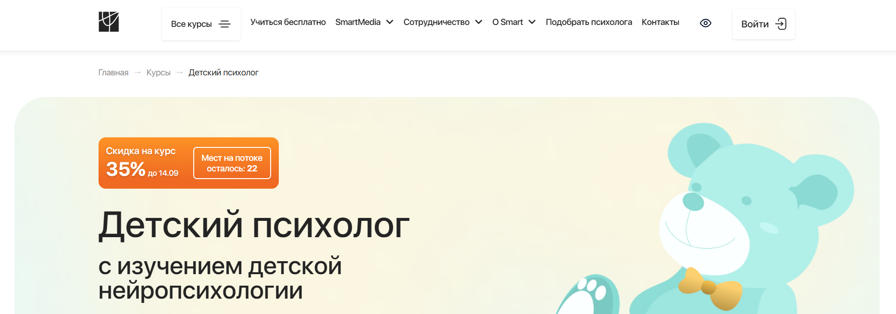- ✅ Официальный сайт: smart-inc.ru
- 💸 Цена: от 117 456 ₽ со скидкой 35%.
- 💳 Рассрочка: доступна от 9788 ₽/мес на 3, 6, 12 или 24 месяца, без переплат, первый платёж через месяц.
- 📚 Формат: дистанционный формат обучения: лекции, видеозаписи, тесты, практические задания, групповые супервизии, онлайн-сессии «Вопрос-ответ».
- ⏳ Продолжительность: от 15 месяцев, 1300+ часов.
- 📜 Документ: выдается диплом о профессиональной переподготовке, диплом MBA (Чехия), HISTES (Гамбург).
- 📝 Трудоустройство: помощь в начале карьеры, предоставление клиентов для практики, доступ к карьерному центру.
- 🔷 Для кого подходит курс: начинающим специалистам в сфере образования и психологии, родителям, желающим глубже понимать детскую психику, специалистам из других сфер и мамам в декрете.
Особенности:
Курс сочетает теоретические знания и практические навыки, необходимые для работы с детьми разных возрастов. Обучение проходит в дистанционном формате, что удобно для совмещения с работой и личной жизнью. Студенты осваивают методы психологической диагностики, консультирования родителей и коррекции поведения детей. В программу включены возрастная психология, основы детской нейропсихологии и практические тренинги. Важное место занимает практика: анализ реальных кейсов, работа в терапевтических тройках, супервизии с опытными психологами. Материалы доступны 24/7, что позволяет учиться в удобное время. По окончании обучения выдается диплом установленного образца, зарегистрированный в ФРДО. Институт сотрудничает с профессиональными ассоциациями, что повышает ценность квалификации выпускников.
Чему учатся студенты:
- Проводить психологическую диагностику и консультировать родителей.
- Осваивать методы коррекции поведения и профилактики буллинга.
- Работать с возрастными кризисами, тревожностью и гиперактивностью.
- Изучать возрастную психологию и аспекты детской нейропсихологии.
- Разрабатывать индивидуальные программы коррекции и адаптации.
- Оказывать психологическую поддержку детям и их семьям.
Преподаватели:
- Юлия Лебедева — кандидат педагогических наук, детский и семейный психолог, автор научных трудов, член ОППЛ.
- Кристина Юст — практикующий специалист в области психологии и педагогики.
Преимущества:
- Практико-ориентированный подход с большим количеством реальных кейсов.
- Поддержка преподавателей, кураторов и менторов на каждом этапе обучения.
- Гибкий и удобный график обучения с доступом к материалам 24/7.
- Возможность начать карьеру с помощью карьерного центра и первых клиентов от института.
- Дипломы международного уровня, признанные в России и за рубежом.
- Партнёрство с ОППЛ и другими профессиональными ассоциациями.
Отзывы учеников:
Студенты отмечают удобный формат обучения и доступность материалов. Многие положительно оценивают практические занятия и возможность работать с реальными кейсами. Поддержка преподавателей и обратная связь помогают уверенно осваивать профессию. Чаще всего выделяют гибкость дистанционного формата, качество материалов и внимание к каждому слушателю.
Перейти на официальный сайт курса5. Детский психолог — Психодемия
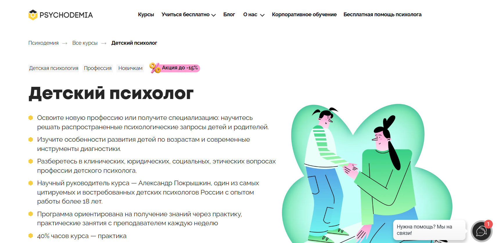- ✅ Официальный сайт: psychodemia.ru
- 💸 Цена обучения: от 153 000 ₽ (со скидкой до -15%).
- 💳 Рассрочка: от 8 500 ₽/мес до 24 месяцев.
- 📚 Формат: дистанционный формат, видеолекции, практические задания, супервизии, тесты, работа в мини-группах, «аквариумные» занятия.
- ⏳ Продолжительность: от 9 до 20 месяцев, от 273 ак. часов.
- 📜 Документ: выдается диплом о профессиональной переподготовке установленного образца, сертификат при отсутствии высшего образования.
- 📝 Трудоустройство: возможность вести частную практику, работать в образовательных учреждениях и психологических центрах, консультировать родителей и детей.
- 🔷 Для кого подходит курс: начинающим психологам, практикующим специалистам (логопедам, нейропсихологам, дефектологам), а также тем, кто хочет освоить профессию с нуля.
Особенности:
Программа сочетает теоретическую базу и практическую подготовку с применением дистанционных технологий. Студенты учатся под руководством опытных преподавателей и получают поддержку кураторов на протяжении всего периода обучения. Большая часть занятий посвящена практическим навыкам консультирования и диагностике. Программа охватывает клиническую психологию, возрастную психологию и методы психологической помощи детям. Удобный формат обучения позволяет совмещать учебу с личным графиком. По окончании курса слушатели получают диплом установленного образца и возможность работать с детьми любых возрастов. Формат дистанционного обучения делает процесс доступным и гибким, а практические аспекты дают уверенность при работе с клиентами.
Чему учатся студенты:
- Проводить психологическую диагностику детей и семей
- Применять методы коррекции поведения и диагностики готовности к школе и детскому саду
- Разрабатывать план помощи ребенку с учетом его возраста
- Проводить семейное консультирование и консультирование родителей
- Определять риски и вовремя оказывать психологическую поддержку
- Освоить навыки ведения индивидуальных консультаций
Преподаватели:
- Александр Покрышкин — научный руководитель курса, один из самых цитируемых детских психологов России, практикующий психолог-консультант, преподаватель НИУ ВШЭ и МИП, сооснователь сообщества Play Therapy Russia.
Преимущества:
- Дистанционное обучение с удобным графиком занятий
- 40% программы составляют практические занятия
- Поддержка кураторов и опытных специалистов на каждом этапе
- Программа включает изучение клинической практики и семейной терапии
- Диплом государственного образца после завершения курса
- Возможность совмещать обучение с работой
- Дополнительные материалы и доступ к профессиональному сообществу выпускников
Отзывы учеников:
Выпускники отмечают удобный формат дистанционного обучения, практическую направленность программы и поддержку преподавателей. Особенно выделяют возможность работать с реальными кейсами и уверенность, которую дает практика под руководством опытных специалистов. Многие студенты подчеркивают, что обучение помогло начать частную практику и повысить стоимость консультаций.
Перейти на официальный сайт курса6. Детский психолог + MBA — Московский институт профессионального образования
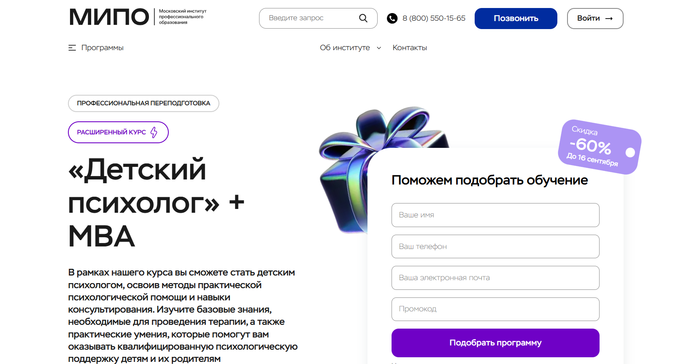- ✅ Официальный сайт: mipo.msk.ru
- 💸 Цена: от 62 700 ₽ (со скидкой до 60%).
- 💳 Рассрочка: доступна от 2 613 ₽/мес до 24 месяцев.
- 📚 Формат: дистанционные занятия, онлайн-вебинары, тесты, практические задания, общение с кураторами.
- ⏳ Продолжительность: 1 год 3 месяца.
- 📜 Документ: диплом о профессиональной переподготовке государственного образца.
- 📝 Трудоустройство: помощь в построении карьеры, поддержка экспертов и карьерного центра.
- 🔷 Для кого подходит курс: для тех, кто хочет освоить профессию с нуля, для действующих психологов и для тех, кто планирует официально работать по специальности.
Особенности:
Программа сочетает теорию и практику с акцентом на дистанционный формат, что удобно для совмещения с работой. Студенты учатся проводить психологическую консультацию детям и родителям, осваивают методы диагностики и практические навыки семейного консультирования. В обучении используются дистанционные технологии: лекции, вебинары, разбор кейсов и практические упражнения. Важно, что по завершении обучения выдается диплом установленного образца с регистрацией в ФРДО. В процессе прохождения курсов студенты получают доступ к материалам и поддержку преподавателей, включая менторов и методистов. Программа подходит для тех, кто хочет освоить профессию детского психолога, углубиться в клиническую практику и применять знания в семейной терапии или частной практике.
Чему учатся студенты:
- Адаптировать воспитательные стратегии к возрастным этапам
- Проводить психологическую диагностику и консультирование родителей
- Разрабатывать методы коррекции поведения и поддержки ребенка
- Изучать аспекты детской и возрастной психологии
- Применять методы психологической помощи и психотерапии
- Понимать закономерности психического развития детей и подростков
Преподаватели:
- Староверова Наталья — практикующий психолог, магистр психологии, член ПСАП
- Цыганкова Анастасия — гештальт-терапевт, бизнес-тренер, НЛП-практик
- Бербер Наталья — кандидат психологических наук, арт-терапевт, спикер
- Рыбальченко Наталья — преподаватель философии, психолог, эксперт с опытом редакторской работы
- Шушкина Людмила — семейный психолог, автор книг по популярной психологии
- Сергачева Ксения — психолог, эксперт по саморазвитию и творческим профессиям
Преимущества:
- Дистанционное обучение с доступом к записям занятий
- Поддержка опытных специалистов и кураторов на всем этапе
- Диплом установленного образца, зарегистрированный в ФРДО
- Практические навыки работы с детьми и семьями
- Программы повышения квалификации и дополнительная подготовка
- Возможность совмещать обучение с работой благодаря удобному графику
Отзывы учеников:
Студенты отмечают удобный формат дистанционного образования, практические задания и поддержку преподавателей. Чаще всего выделяют доступность материалов, помощь кураторов и возможность совмещать учебу с работой. Многие рекомендуют программу за практическую пользу и реальную подготовку к профессии.
Перейти на официальный сайт курса7. Детская психология. Практическая психологическая помощь детям и подросткам — АНО «НИИДПО»
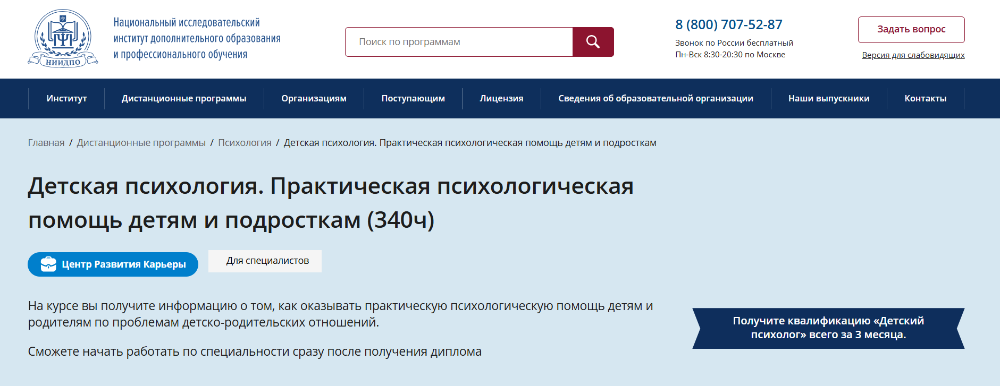- ✅ Официальный сайт: niidpo.ru
- 💸 Цена обучения: 28 000 ₽ (со скидкой 23 300 ₽).
- 💳 Рассрочка: от 2 335 ₽/мес на 12 месяцев без переплат и первого взноса.
- 📚 Формат: дистанционный формат, видеолекции, тесты, практические задания, вебинары, доступ к библиотеке материалов.
- ⏳ Продолжительность: 12 недель (3 месяца).
- 📜 Документ: диплом о профессиональной переподготовке установленного образца, дополнительный сертификат компетенций.
- 📝 Трудоустройство: возможность работать в образовательных организациях, центрах консультирования или открыть частную практику.
- 🔷 Для кого подходит курс: для специалистов с базовым психологическим образованием, желающих освоить профессию детского психолога и получить практические навыки.
Особенности:
Программа построена по формату дистанционного обучения, что делает ее удобной для слушателей из любого региона. Студенты учатся у опытных психологов и клинических специалистов, получают знания по возрастной психологии, методам диагностики и консультирования родителей. Образовательный процесс включает современные дистанционные технологии, что помогает совмещать учебу с работой. По окончании обучения выдается диплом, который действует на всей территории России. Материалы доступны и после завершения курса, что обеспечивает возможность возвращаться к ним в дальнейшем. Поддержку предоставляют преподаватели и кураторы. Карьерный центр института помогает выпускникам с построением успешной практики и продвижением личного бренда.
Чему учатся студенты:
- Оказывать психологическую помощь детям и подросткам
- Консультировать родителей по вопросам воспитания и поведения ребенка
- Применять методы коррекции и арт-терапии
- Использовать основы клинической психологии и семейного консультирования
- Проводить психологическую диагностику и консультации
Преподаватели:
- Коломейцева Лидия Владимировна — педагог-психолог, клинический психолог, практикующий специалист в консультировании родителей и детей
- Рогацкая Маргарита Сергеевна — специалист в области дефектологии
Преимущества:
- Удобный формат дистанционного обучения с доступом к материалам 24/7
- Практические задания с проверкой от опытных преподавателей
- Возможность совмещать обучение с работой и личными делами
- Скидка при раннем поступлении и бонусы за оплату единовременно
- Доступ к базе вебинаров и методическим материалам после завершения курсов
- Карьерная поддержка и консультации по развитию практики
Отзывы учеников:
Студенты отмечают удобный формат занятий дистанционно, практическую направленность курса и поддержку преподавателей. Подчеркивают ценность материалов, доступ к которым сохраняется и после окончания обучения. Многие выпускники благодарят за помощь в построении карьеры и качественную организацию учебного процесса.
Перейти на официальный сайт курса8. Детская психология — Московский институт технологий и управления
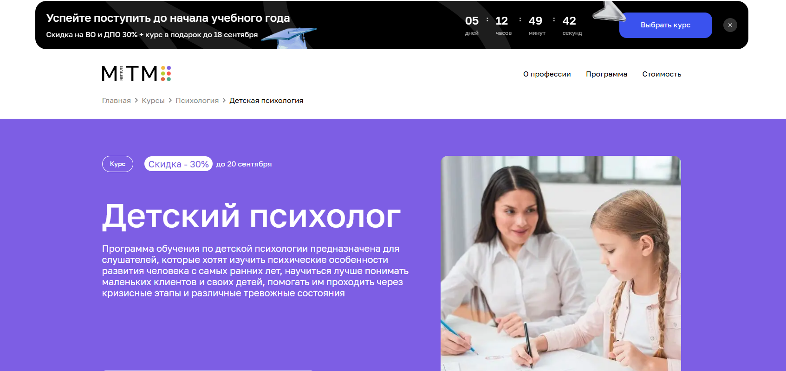- ✅ Официальный сайт: mitm.institute
- 💸 Цена обучения: 75 000 ₽ (со скидкой 30%).
- 💳 Рассрочка: 6 250 ₽/мес на 12 месяцев без процентов, доступна оплата через банк.
- 📚 Формат: дистанционные занятия, видеолекции, домашние задания, тесты, практикумы, супервизии.
- ⏳ Продолжительность: 1 год (1800 часов).
- 📜 Документ: выдается диплом о профессиональной переподготовке государственного образца.
- 📝 Трудоустройство: выпускники получают возможность работать психологами, консультантами, а также вести частную практику.
- 🔷 Для кого подходит курс: для родителей, начинающих специалистов, студентов психологических факультетов, а также всех, кто работает с детьми.
Особенности:
Программа создана в дистанционном формате обучения, что позволяет учиться из любой точки мира. Образовательный процесс построен с применением дистанционных технологий, видеолекций и практических заданий. Курс сочетает теоретический материал с практическими аспектами психологии, включая методики диагностики и консультирования. Студенты осваивают навыки консультирования, проводят психологическую диагностику и участвуют в практических занятиях с обратной связью. После прохождения курсов слушатели получают диплом установленного образца. Удобный график обучения позволяет совмещать учебу с работой или другими делами. Поддержка кураторов и опытных преподавателей сопровождает студентов на протяжении всего периода обучения.
Чему учатся студенты:
- Понимать психологические особенности детей на разных возрастных этапах
- Применять методы диагностики и коррекции поведения ребенка
- Оказывать психологическую поддержку в кризисных ситуациях
- Использовать практические инструменты для консультирования родителей
- Анализировать психику ребенка и выявлять тревожные состояния
- Работать с детско-родительскими отношениями и проводить консультации
Преподаватели:
- Елена Айрапетян — интегративный психолог, магистр психологии, член Ассоциации когнитивно-поведенческой психотерапии
- Тархова Валерия — практикующий системный семейный психотерапевт, магистр психологии, преподаватель ВШЭ
- Пронькина Анастасия — клинический психолог, член Ассоциации когнитивно-поведенческой психотерапии, КПТ-терапевт
Преимущества:
- Удобный формат дистанционного обучения
- Доступ к учебным материалам и видеолекциям в личном кабинете
- Поддержка кураторов и обратная связь от преподавателей
- Возможность совмещать обучение с работой
- Практическая подготовка и супервизии
- Диплом государственного образца
- Налоговый вычет 13% при оплате обучения
Отзывы учеников:
Студенты отмечают профессионализм преподавателей, насыщенную программу и удобный дистанционный формат. Многие подчеркивают практическую направленность курса, большое количество полезных материалов и возможность совмещать обучение с работой. Выпускники рекомендуют курс за качественный контент, поддержку кураторов и реальную практику, которая помогает в начале карьеры детского психолога.
Перейти на официальный сайт курса9. Детский психолог — Московская школа прикладной психологии (МШПП)
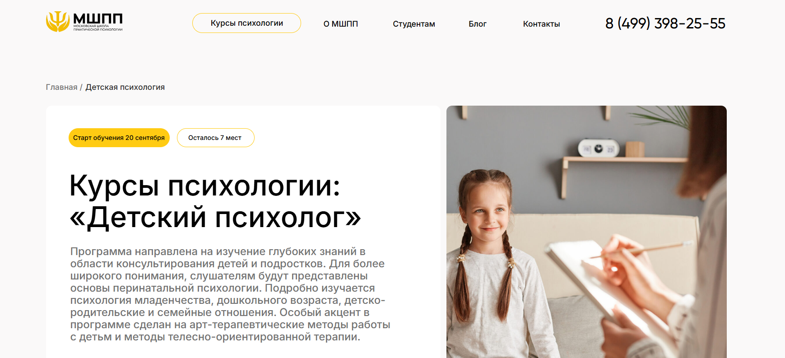- ✅ Официальный сайт: mspp.online
- 💸 Цена обучения: от 150 000 ₽ (возможна экономия 13% при налоговом вычете).
- 💳 Рассрочка: 6 250 ₽/мес от 3 до 36 месяцев, доступна как от школы, так и от банков-партнеров.
- 📚 Формат: дистанционное обучение, видеолекции, конспекты, практические задания, супервизии, групповые практикумы, очные занятия.
- ⏳ Продолжительность: 10 месяцев (1010 академических часов, включая 280 часов практики).
- 📜 Документ: диплом о профессиональной переподготовке установленного образца, возможность получения международного диплома MBA.
- 📝 Трудоустройство: карьерный центр МШПП помогает с поиском работы, подготовкой к собеседованиям и построением карьеры.
- 🔷 Для кого подходит курс: начинающим специалистам, практикующим психологам, студентам и выпускникам, желающим освоить профессию детского психолога или открыть частную практику.
Особенности:
Образовательная программа создана с применением дистанционных технологий, что делает обучение доступным и удобным. Студенты получают поддержку преподавателей и кураторов на каждом этапе прохождения обучения. Курсы включают изучение возрастной психологии, основ клинической практики, методов коррекции и диагностики психики ребенка. Формат дистанционного обучения сочетает лекции и практику, что позволяет гибко совмещать учебу и работу. Особое внимание уделяется освоению навыков консультирования родителей и семейной терапии. Удобный формат занятий помогает учиться дистанционно без потери качества, а материалы доступны в личном кабинете 24/7. Выпускники получают диплом, подтверждающий квалификацию и открывающий возможности официального трудоустройства или частной практики.
Чему учатся студенты:
- Проводить психологическую диагностику и консультирование родителей
- Использовать методы игровой терапии и арт-терапии
- Работать с детьми в дошкольном и подростковом возрасте
- Применять навыки консультирования в семейной терапии
- Выявлять и корректировать задержки психического развития
- Проводить психологическую консультацию с учетом индивидуальных особенностей
Преподаватели:
- Программа создана более чем 50 экспертами: практикующими психотерапевтами и психологами
- Все преподаватели имеют опыт работы в клинической психологии и консультировании детей
- Супервизоры и кураторы — практикующие специалисты в области психологии семьи и детского возраста
Преимущества:
- Дистанционный формат обучения с удобным графиком
- Выдается диплом установленного образца и международный диплом MBA
- Практические занятия и реальная практика с клиентами
- Поддержка карьерного центра при трудоустройстве
- Опытные преподаватели и супервизоры
- Доступ к учебным материалам и дополнительным ресурсам в любое время
- Возможность совмещать обучение с работой
Отзывы учеников:
Студенты отмечают, что курсы помогают освоить профессию с нуля и дают уверенность в практических занятиях. Чаще всего выделяют удобный формат дистанционного обучения, поддержку кураторов и преподавателей, а также полезные практические задания. Многие положительно отзываются о карьерном центре, который помогает найти первую работу и начать успешную карьеру детского психолога.
Перейти на официальный сайт курса10. Детский психолог. Работа с детьми и подростками — Институт профессионального образования
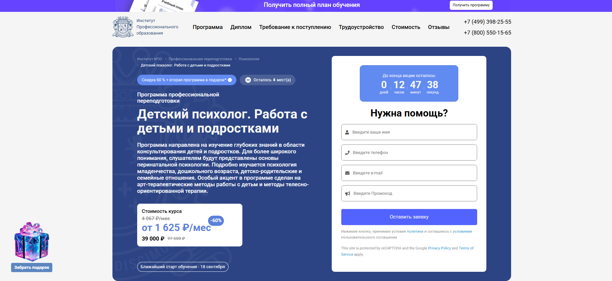- ✅ Официальный сайт: ipo.msk.ru
- 💸 Цена обучения: от 39 000 ₽ (со скидкой 60%, вместо 97 600 ₽).
- 💳 Рассрочка: доступна — от 1 625 ₽/мес на 24 месяца.
- 📚 Формат: дистанционный формат, видеолекции, домашние задания, тесты, практические занятия, онлайн-вебинары, менторская поддержка.
- ⏳ Продолжительность: 586 часов — около 7 месяцев.
- 📜 Документ: выдается диплом о профессиональной переподготовке установленного образца.
- 📝 Трудоустройство: помощь в составлении резюме, карьерные консультации, практика и возможность выйти на рынок труда.
- 🔷 Для кого подходит курс: для тех, кто хочет освоить профессию детского психолога с нуля, родителей, желающих лучше понимать детей, и специалистов, стремящихся расширить знания и навыки.
Особенности:
Образовательная программа полностью реализована в дистанционном формате, что позволяет учиться без отрыва от работы. Курс сочетает теоретические знания и практические задания, включая реальные кейсы. Студенты изучают возрастную и клиническую психологию, семейное консультирование и методы коррекции поведения детей. Важное внимание уделяется арт-терапии, игровой и песочной терапии, что помогает глубже понимать аспекты детской психики. Учебные материалы доступны онлайн в любое время, а поддержку оказывают опытные преподаватели и менторы. После завершения обучения слушатели получают диплом, который дает право на психологическую консультацию и открывает путь к успешной карьере в сфере психологии.
Чему учатся студенты:
- Проводить психологическую диагностику детей и подростков
- Анализировать семейные отношения и динамику
- Применять методы коррекции и поддержки психического здоровья
- Использовать современные методики арт-терапии и игровой терапии
- Консультировать родителей по вопросам воспитания
- Разрабатывать индивидуальные программы психологической поддержки
Преподаватели:
- Наталья Викторовна Рыбальченко — профессиональный психолог, преподаватель философии
- Татьяна Геннадьевна Урывчикова — нейропсихолог, клинический психолог, член Ассоциации когнитивно-поведенческой психотерапии
- Наталья Николаевна Бербер — кандидат психологических наук, практикующий психолог
Преимущества:
- Дистанционный формат с удобным графиком обучения
- Выдается диплом государственного образца
- Поддержка опытных специалистов и кураторов
- Совмещение теории с практическими занятиями
- Доступ к дополнительным курсам и материалам
- Помощь в трудоустройстве и карьерном развитии
Отзывы учеников:
Выпускники отмечают, что программа дает практические навыки и глубокие знания в области детской психологии. Студенты подчеркивают доступность дистанционного обучения, полезность обратной связи от преподавателей и возможность совмещать учебу с работой. Многие выпускники рекомендуют Институт ИПО за качественный контент и реальную помощь в карьерном росте.
Перейти на официальный сайт курса11. Детская психология. Практическая помощь детям и подросткам — Национальный центральный институт развития дополнительного образования
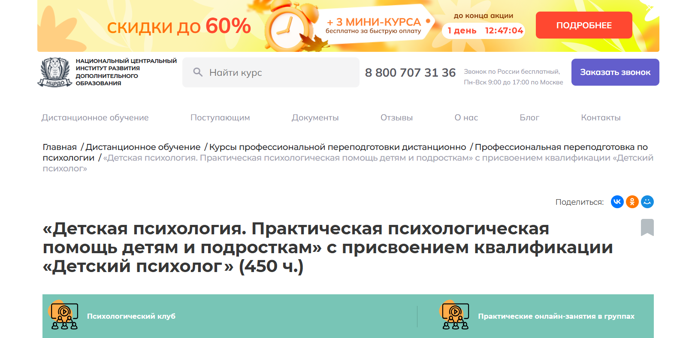- ✅ Официальный сайт: ncrdo.ru
- 💸 Цена обучения: 42 600 ₽ со скидкой от 76 400 ₽.
- 💳 Рассрочка: доступна от института и банков — от 1 183 ₽/мес на 36 месяцев.
- 📚 Формат: дистанционный формат, лекции, вебинары, тесты, аудиолекции, практические задания, доступ к библиотекам и методическим материалам.
- ⏳ Продолжительность: 3 месяца (450 часов).
- 📜 Документ: диплом о профессиональной переподготовке установленного образца.
- 📝 Трудоустройство: выпускники могут работать в образовательных учреждениях, центрах развития, вести частную практику и консультировать семьи.
- 🔷 Для кого подходит курс: для педагогов, начинающих и практикующих психологов, специалистов с высшим или средним профессиональным образованием.
Особенности:
Курс построен в дистанционном формате, что позволяет учиться без отрыва от работы и совмещать учебный процесс с личными делами. Программа сочетает теоретический материал с практическими заданиями, что помогает студентам освоить навыки психологического консультирования и диагностики. Доступ к образовательным материалам и вебинарам предоставляется любым удобным способом через личный кабинет. В обучении участвуют опытные преподаватели и практикующие специалисты, обеспечивающие поддержку на всех этапах прохождения курса. Студенты учатся применять методы коррекции поведения, психологической поддержки и психотерапии в подростковом возрасте. По завершении обучения выдается диплом установленного образца, а также доступ к дополнительным профессиональным сообществам. Программа учитывает современные подходы в клинической психологии и педагогической психологии, что делает обучение особенно полезным для специалистов, планирующих карьеру детского психолога.
Чему учатся студенты:
- Изучают возрастные особенности психики детей и подростков
- Осваивают методы психологической диагностики и консультирования родителей
- Получают знания в области клинической психологии детского и подросткового возраста
- Изучают психотерапию и методы коррекции поведения
- Учaтся проводить психологическую консультацию и семейное консультирование
- Разбирают аспекты детской нейропсихологии и психосоматические нарушения
Преподаватели:
- Закирова Неля Ришатовна — опыт научно-практической деятельности с 2017 года
- Стороженко Людмила Сергеевна — опыт научно-практической деятельности с 2002 года
- Мамаева Ирина Владимировна — опыт научно-практической деятельности с 2013 года
- Богуцкая Лилия Владимировна — опыт научно-практической деятельности с 2005 года
Преимущества:
- Дистанционный формат обучения с доступом к материалам в любое время
- Поддержка преподавателей и кураторов на всех этапах
- Возможность совмещать обучение с работой и личными делами
- Доступ к ЛитРес и библиотеке Библиоклуб в подарок
- Выдается диплом установленного образца
- Рассрочка оплаты и возврат налогового вычета 13%
- Практические занятия и разбор реальных кейсов
- Помощь в трудоустройстве выпускников
Отзывы учеников:
Студенты отмечают удобный формат дистанционного обучения, качественные материалы и поддержку опытных преподавателей. Многие благодарят за возможность совмещать учебу с работой, отмечают полезность практических заданий и доступ к дополнительным материалам. Среди плюсов выделяют диплом государственного образца, честные условия рассрочки и высокий уровень профессиональной подготовки.
Перейти на официальный сайт курса12. Детская психология. Практическая психологическая помощь детям и подросткам — Центральная академия профессиональной переподготовки и повышения квалификации кадров
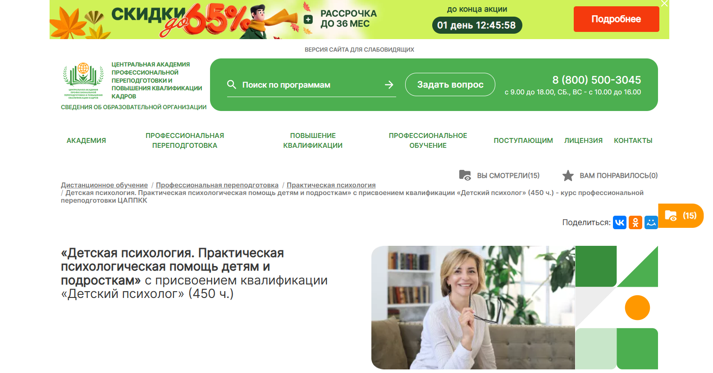- ✅ Официальный сайт: appkk.ru
- 💸 Цена обучения: 36 800 ₽ (скидка от полной стоимости 39 900 ₽).
- 💳 Рассрочка: до 36 месяцев от 1 022 ₽/мес.
- 📚 Формат: заочный дистанционный формат с применением дистанционных образовательных технологий, видеолекции, тесты, контрольные задания, вебинары.
- ⏳ Продолжительность: 3 месяца (450 часов).
- 📜 Документ: диплом о профессиональной переподготовке, вносится в ФИС ФРДО.
- 📝 Трудоустройство: помощь HR-наставника в поиске работы, составлении резюме, подборе вакансий.
- 🔷 Для кого подходит курс: для психологов, педагогов, воспитателей, а также для специалистов смежных областей, планирующих освоить профессию детского психолога.
Особенности:
Программа создана для тех, кто хочет получить профессиональную переподготовку в удобном формате дистанционного образования. Все материалы доступны онлайн 24/7, включая лекции, задания и библиотеку вебинаров. Студенты осваивают практические навыки консультирования и учатся оказывать психологическую помощь детям и подросткам в разных возрастных этапах. Курсы включают методики диагностики, коррекции и консультирования родителей. По окончании обучения выдается диплом установленного образца, который заносится в государственный реестр. Поддержка преподавателей и кураторов помогает слушателям успешно завершить курс. Академия гарантирует удобный график обучения и доступные цены. Дополнительно слушатели получают бессрочный доступ к аудиолекциям и библиотеке.
Чему учатся студенты:
- Понимать аспекты детской психики и особенности подросткового возраста
- Освоить методы психологической диагностики и коррекции поведения
- Проводить психологическую консультацию с детьми и родителями
- Применять современные методики психологического консультирования
- Использовать практические инструменты для поддержки в детском саду и школе
Преподаватели:
- Анастасия Регнер — HR-наставник, бизнес-тренер, участник международных конференций, специалист по стратегическим коммуникациям.
Преимущества:
- Дистанционное обучение в удобном формате
- Поддержка преподавателей и кураторов на протяжении всего курса
- Доступ к учебным материалам и вебинарам без ограничения по времени
- Внесение документов о квалификации в государственный реестр
- Помощь в трудоустройстве и подборе вакансий
- Возможность совмещать обучение с работой или учебой
Отзывы учеников:
Слушатели отмечают удобный дистанционный формат, доступные цены и качественные учебные материалы. Многие подчеркивают поддержку преподавателей и ценность практических заданий. В отзывах в Яндекс и 2GIS студенты выделяют высокий уровень организации образовательного процесса и реальную помощь в развитии карьеры.
Перейти на официальный сайт курса13. Профессия Детский психолог — Международная школа профессий

- ✅ Официальный сайт: moscow.videoforme.ru
- 💸 Цена: 46 500 ₽ (скидка от 77 500 ₽)
- 💳 Рассрочка: от 5 200 ₽/мес, беспроцентная, срок до 9 месяцев
- 📚 Формат: дистанционные занятия, видеолекции, домашние задания, тесты, онлайн-общение с преподавателями
- ⏳ Продолжительность: 20 недель (76 академических часов)
- 📜 Документ: выдается диплом о профессиональной переподготовке
- 📝 Трудоустройство: возможность работать практикующим психологом с детьми и родителями, вести частные консультации
- 🔷 Для кого подходит курс: для начинающих специалистов, педагогов и всех, кто хочет получить навыки консультирования и психологической диагностики
Особенности:
Программа строится по формату дистанционного обучения и сочетает теорию с практическими заданиями. Слушатели изучают аспекты детской и возрастной психологии, методы коррекции поведения и арт-терапии. Занятия проводят опытные преподаватели, поэтому студенты осваивают навыки консультирования и работы с детской психикой под руководством специалистов. Дистанционный формат удобен для совмещения с работой или учёбой. После прохождения курсов студент получает диплом установленного образца. Материалы доступны онлайн, поэтому учиться можно в любом удобном месте. В процессе обучения предусмотрена поддержка кураторов и преподавателей. По окончании курса выпускники получают возможность вести частную практику или работать в образовательных учреждениях.
Чему учатся студенты:
- Освоить методы психологической диагностики
- Проводить психологическую консультацию и консультирование родителей
- Применять методы арт-терапии и коррекцию поведения
- Изучить возрастную психологию и этапы развития ребёнка
- Оказывать психологическую поддержку детям и подросткам
Преподаватели:
- Александра Фёдорова — практикующий психолог, консультант в сфере тревожно-фобических состояний
- Надежда Зарипова — специалист по семейной терапии и индивидуальному консультированию
- Анастасия Еркина — психолог, специализация: клиническая психология, детская психотерапия
Преимущества:
- Обучение проходит дистанционно, что позволяет совмещать с личным графиком
- Курс включает практические навыки: диагностику, нейрокоррекцию, арт-терапию
- Опытные преподаватели и поддержка кураторов
- Диплом о профессиональной переподготовке выдается по завершении обучения
- Возможность работать в сфере образования или вести частную практику
- Материалы доступны онлайн в любое время
Отзывы учеников:
Слушатели отмечают удобный формат занятий, доступное объяснение материала и большое количество практических заданий. Студенты подчеркивают, что благодаря курсу научились проводить диагностику и консультирование родителей. Отмечают поддержку преподавателей и возможность применять полученные знания сразу в работе.
Перейти на официальный сайт курса14. Детский психолог — Учебный центр АПОК
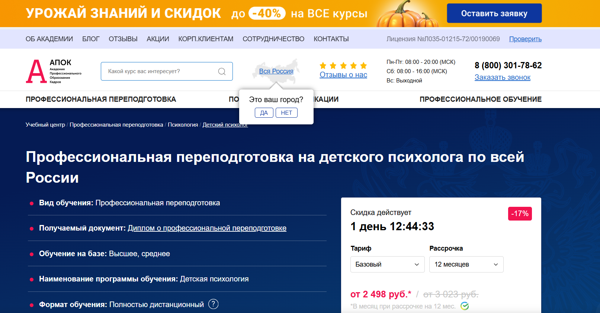- ✅ Официальный сайт: apokdpo.ru
- 💸 Цена обучения: от 29 980 ₽ (со скидкой).
- 💳 Рассрочка: беспроцентная до 12 месяцев, от 2 498 ₽ в месяц.
- 📚 Формат: дистанционный формат, видеолекции, тесты, учебные материалы, индивидуальные консультации.
- ⏳ Продолжительность: от 1 до 5 месяцев (от 250 академических часов).
- 📜 Документ: выдается диплом о профессиональной переподготовке установленного образца.
- 📝 Трудоустройство: регистрация в ФИС ФРДО, диплом дает право работать психологом в образовательных учреждениях и частной практике.
- 🔷 Для кого подходит курс: для специалистов с высшим или средним образованием, желающих освоить профессию детского психолога и получить новую квалификацию.
Особенности:
Программа полностью реализуется в дистанционном формате, что позволяет совмещать обучение с работой и личными делами. Учебный центр АПОК предлагает гибкий график обучения и поддержку преподавателей на всех этапах прохождения курсов. Материалы доступны в личном кабинете, студенты получают дипломы установленного образца, а информация об обучении вносится в государственный реестр. Доступный формат занятий помогает изучить аспекты детской психологии и освоить методы психологической диагностики и консультирования родителей. После окончания обучения студенты получают не только диплом, но и практические навыки, которые можно применять в сфере образования, семейной терапии и психологической поддержки детей.
Чему учатся студенты:
- Изучают возрастную психологию и особенности воспитания на разных этапах
- Осваивают основы клинической психологии детей
- Учатся проводить психологическую диагностику
- Получают навыки консультирования родителей и психологической поддержки
- Знакомятся с методами коррекции поведения и особенностями работы с детьми с ОВЗ
Преподаватели:
- Опытные специалисты центра АПОК с практикой в сфере детской психологии и образования
Преимущества:
- Полностью дистанционный формат обучения
- Скидки и акции для студентов и их семей
- Бесплатная доставка диплома по всей России
- Регистрация диплома в государственном реестре ФИС ФРДО
- Возможность составить индивидуальную программу обучения
- Поддержка кураторов и преподавателей
Отзывы учеников:
Студенты отмечают удобный формат обучения, доступность материалов и возможность учиться дистанционно в любом регионе России. Многие подчеркивают практическую ценность занятий и отмечают, что курсы позволяют быстро получить новую профессию и уверенно применять знания в работе с детьми и родителями.
Перейти на официальный сайт курса15. Детский психолог — Учебный центр дополнительного профессионального образования ЭКОДПО
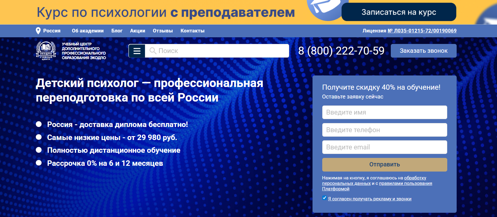- ✅ Официальный сайт: ecodpo.ru
- 💸 Цена: от 29 980 ₽ (со скидкой 40% от 49 980 ₽).
- 💳 Рассрочка: 0% на 6 или 12 месяцев, ежемесячные платежи от 2 500 ₽.
- 📚 Формат: дистанционный формат обучения, видеолекции, тесты, практические задания, индивидуальные онлайн-занятия (на VIP-тарифе).
- ⏳ Продолжительность: от 250 часов, от 1,5 месяцев.
- 📜 Документ: диплом о профессиональной переподготовке установленного образца с внесением данных в ФИС ФРДО.
- 📝 Трудоустройство: возможность работать в школах, детских садах, центрах сопровождения семьи, НКО и консультативных организациях.
- 🔷 Для кого подходит курс: для специалистов с высшим или средним профобразованием, желающих освоить профессию детского психолога или повысить квалификацию.
Особенности:
Обучение проходит в дистанционном формате с удобным графиком без отрыва от основной работы или учебы. Студенты получают доступ к образовательной платформе, где доступны лекции, материалы и тесты 24/7. После завершения обучения выдается диплом государственного образца, который заносится в ФИС ФРДО. Курс сочетает теоретические основы и практические аспекты детской психологии. Для студентов предусмотрены тарифы с индивидуальными онлайн-занятиями с опытными преподавателями. Доставка документов осуществляется бесплатно по всей России. Программа учитывает современные методики диагностики и коррекции поведения детей. Учебный центр имеет официальную лицензию на образовательную деятельность, что гарантирует качество обучения и соответствие закону №273-ФЗ.
Чему учатся студенты:
- Возрастная психология и периодизации развития
- Основы клинической психологии детей
- Методы диагностики и коррекции поведения
- Особенности воспитания на разных возрастных этапах
- Психология детей с ОВЗ
- Профессиональная этика психолога
- Навыки консультирования родителей и оказания психологической поддержки
Преподаватели:
- Практикующий специалист — проводит индивидуальные занятия и консультации онлайн
Преимущества:
- Полностью дистанционный формат обучения
- Диплом государственного образца с внесением данных в ФИС ФРДО
- Гибкая рассрочка 0% на 6 и 12 месяцев
- Бесплатная доставка диплома по всей России
- Поддержка кураторов и преподавателей на всех этапах
- Доступ к учебным материалам даже после завершения курсов
Отзывы учеников:
Студенты отмечают структурированность учебных материалов, удобный дистанционный формат и поддержку кураторов. Многие благодарят за возможность совмещать учебу с работой и подчеркивают, что материалы изложены доступным языком. Выпускники пишут о быстрой доставке дипломов и реальной пользе программы для начала или развития карьеры.
Перейти на официальный сайт курса16. Профессиональная переподготовка на детского психолога — Учебный центр «НЦПО»

- ✅ Официальный сайт: ncpo.ru
- 💸 Цена обучения: от 19 800 ₽ (скидка 3 000 ₽ при оплате в день заказа).
- 💳 Рассрочка: от 1 650 ₽/мес, беспроцентная, удобными платежами.
- 📚 Формат: дистанционный формат, очные и заочные занятия, видеолекции, практические задания, тесты.
- ⏳ Продолжительность: от 250 до 500 часов.
- 📜 Документ: выдается диплом о профессиональной переподготовке, данные вносятся в госреестр ФРДО.
- 📝 Трудоустройство: диплом дает право работать в образовательных учреждениях, центрах психологии и вести частную практику.
- 🔷 Для кого подходит курс: для специалистов с высшим или средним профессиональным образованием, желающих освоить профессию в сфере детской психологии.
Особенности:
Программа ориентирована на практическое освоение профессии детского психолога с применением дистанционного образования. Формат обучения позволяет совмещать учебу и работу, получая знания в удобный график. Курсы включают изучение методов диагностики, коррекции и психологического консультирования. Студенты учатся работать с детской психикой на разных возрастных этапах, осваивают навыки консультирования родителей и семейной терапии. По окончании обучения выдается диплом государственного образца, который бессрочно подтверждает квалификацию. Образовательный процесс сопровождается поддержкой преподавателей и кураторов. Материалы доступны онлайн 24/7, что делает обучение гибким и современным. Слушатели получают практическую подготовку и могут проводить психологическую диагностику и консультации.
Чему учатся студенты:
- Проводить психологическую диагностику и консультирование родителей
- Осваивать методы коррекции поведения детей и подростков
- Применять методики диагностики и психологической поддержки
- Работать с детской психикой и возрастными особенностями
- Проводить психологическую консультацию и семейное консультирование
Преподаватели:
- Терешков Александр Леонидович — генеральный директор УЦ «НЦПО»
- Грезнева Диана — преподаватель психологии
- Малкова Анна — преподаватель психологии
Преимущества:
- Дистанционное обучение с доступом к материалам 24/7
- Диплом бессрочного действия с внесением в госреестр
- Опытные преподаватели и поддержка кураторов
- Гибкий формат занятий с возможностью совмещать с работой
- Практическая подготовка для реальной работы с детьми
- Официальная лицензия Министерства образования
Отзывы учеников:
Студенты отмечают удобный формат обучения и доступность материалов. Чаще всего подчеркивают практическую пользу занятий, внимательное отношение преподавателей и возможность совмещать учебу с работой. Высоко оценивают официальные документы, которые позволяют быстро трудоустроиться по новой специальности.
Перейти на официальный сайт курсаКто такой детский психолог?
Детский психолог — это специалист, который помогает детям и подросткам справляться с эмоциональными трудностями, проблемами в общении, учебе и адаптации. Его основная задача — поддержать гармоничное развитие личности, выявить и скорректировать возможные психологические отклонения, а также наладить взаимодействие ребенка с семьей и обществом.
Что делают детские психологи и чем занимаются?
Работа детского психолога многогранна и включает несколько направлений:
- Проведение индивидуальных и групповых консультаций с детьми и родителями.
- Диагностика психоэмоционального состояния ребенка с помощью тестов и бесед.
- Помощь в преодолении страхов, тревожности, агрессивности, замкнутости.
- Коррекционная работа с детьми с особыми потребностями (ЗПР, СДВГ, аутизм и др.).
- Сопровождение школьников в период адаптации к новым условиям (сад, школа, переезд).
- Разработка развивающих программ и методик для улучшения памяти, внимания и мышления.
Что должен знать и уметь детский психолог?
Чтобы быть эффективным специалистом, детский психолог должен обладать как теоретическими знаниями, так и практическими навыками:
- Знание детской и возрастной психологии.
- Умение применять психодиагностические методики.
- Навыки психотерапии и коррекции поведения.
- Коммуникативные способности для работы с детьми и родителями.
- Терпение, эмпатия и стрессоустойчивость.
Востребованность и зарплаты детских психологов в России
Профессия детского психолога остается одной из самых востребованных. С ростом нагрузки на школьников, увеличением числа детей с особенностями развития и повышением уровня осведомленности родителей, спрос на таких специалистов продолжает расти.
Средние зарплаты:
- В государственных учреждениях (детские сады, школы, центры) — от 40 000 до 70 000 рублей.
- В частных центрах и на индивидуальных консультациях — от 80 000 до 150 000 рублей и выше, в зависимости от региона и опыта.
Особенно ценятся специалисты с дополнительными навыками в нейропсихологии, логопедии и арт-терапии.
Как стать детским психологом и где учиться?
Чтобы стать детским психологом, необходимо получить высшее психологическое образование. Чаще всего выбирают направления "Психология", "Педагогическая психология", "Клиническая психология".
- Обучение в ведущих вузах России: МГУ, СПбГУ, МГППУ, РГГУ, РАНХиГС и др.
- Дополнительные курсы и программы повышения квалификации по детской и возрастной психологии.
- Практика в детских садах, школах, реабилитационных центрах.
После получения диплома можно работать в государственных учреждениях или развивать частную практику.
Где можно работать после обучения?
Сфера деятельности детского психолога обширна. Он может работать в:
- Детских садах и школах.
- Центрах психолого-педагогической помощи.
- Медицинских учреждениях (поликлиники, реабилитационные центры).
- Частных психологических кабинетах.
- Онлайн-консультациях через специализированные платформы.
Перспективы профессии
По мере роста интереса родителей к психическому здоровью детей, профессия детского психолога будет только укреплять свои позиции. В ближайшие годы ожидается расширение онлайн-практики, активное внедрение современных технологий диагностики и коррекции, а также рост числа специалистов с узкой специализацией (например, нейропсихологи, арт-терапевты, сказкотерапевты).
Что включает обучение на детского психолога?
Обучение по профессии детского психолога включает изучение возрастной психологии, клинической психологии, методов психологической диагностики и коррекции поведения. Студенты освоят навыки консультирования родителей, проведения психологической консультации и методики диагностики психики ребенка. Курсы включают как теоретические основы, так и практические занятия с опытными психологами.
Можно ли пройти обучение дистанционно?
Да, современные образовательные центры предлагают обучение в дистанционном формате. Это удобный формат, позволяющий совмещать учебу с работой или семьей. Все материалы доступны онлайн, лекции доступны в записи, а занятия проводятся с применением дистанционных технологий, что делает процесс гибким и комфортным.
Сколько длится обучение по детской психологии?
Сроки прохождения зависят от выбранной программы. Например, профессиональную переподготовку можно пройти за 6–12 месяцев, курсы повышения квалификации занимают от 2 до 3 месяцев. В зависимости от формата обучения слушатель получает диплом установленного образца или сертификат.
Какой диплом выдается после окончания обучения?
По итогам прохождения курса выдается диплом государственного образца или официальный сертификат при прохождении коротких курсов повышения квалификации. Такой документ подтверждает присвоение квалификации и дает возможность работать в сфере детской психологии и консультирования.
Какие предметы изучают на курсах по детской психологии?
Учебные программы включают детскую психологию, возрастную психологию, педагогическую психологию, основы психотерапии, психологическую диагностику и коррекцию. Также студенты изучают практические аспекты консультирования родителей, методы арт-терапии, игровую терапию и семейное консультирование.
Кому подходит обучение на детского психолога?
Курсы подходят для начинающих специалистов, педагогов, воспитателей, а также для тех, кто хочет освоить профессию с нуля. Обучение будет полезно практикующим психологам, желающим пройти повышение квалификации, и родителям, стремящимся глубже понять психологические особенности ребенка.
Как проходит дистанционное обучение на детского психолога?
Все занятия проходят на образовательной платформе. Студенты получают доступ к учебным материалам, видеолекциям, заданиям и кейсам. Обучение сопровождается поддержкой кураторов и опытных преподавателей. По ходу обучения студенты выполняют практические задания и получают обратную связь.
Можно ли совмещать обучение с работой?
Да, удобный график обучения позволяет учиться в любое время. Благодаря дистанционному формату слушатели могут учиться дистанционно и совмещать учебный процесс с профессиональной деятельностью. Материалы доступны круглосуточно, что делает процесс комфортным.
Какие практические навыки получат студенты?
Студенты освоят навыки консультирования родителей, проведения психологической диагностики, коррекции поведения и психологического сопровождения детей. Практика включает индивидуальные консультации, групповые занятия, работу с реальными кейсами и ситуациями из детской психики.
Кто преподает на курсах по детской психологии?
Обучение проводят опытные специалисты: практикующие психологи, кандидаты психологических наук, клинические психологи и педагоги. Опытные преподаватели делятся практическими инструментами, помогают осваивать современные методики и дают обратную связь по заданиям.
Сколько стоит обучение на детского психолога?
Стоимость обучения зависит от учебного центра, формата занятий и длительности курса. В среднем цена варьируется от 15 000 рублей за короткий курс до 100 000 рублей за полноценную программу профессиональной переподготовки. Многие учебные центры предоставляют рассрочку и скидки.
Можно ли после обучения работать в образовательных учреждениях?
Да, после окончания обучения и получения диплома можно работать в детском саду, школах, центрах психологической поддержки, а также вести частную практику. Сфера деятельности включает консультирование детей, родителей и проведение психологической диагностики.
Какие преимущества дистанционного обучения?
Дистанционное обучение позволяет получать знания в удобном формате, совмещать учебу с работой и семьей. Материалы доступны в любое время, студенты получают поддержку преподавателей и кураторов, а также по завершении обучения получают официальный диплом.
Можно ли начать обучение без психологического образования?
Да, освоить профессию детского психолога можно с нуля, даже без психологического образования. Для этого существуют программы профессиональной переподготовки, рассчитанные на слушателей с любым высшим образованием. В таких курсах подробно рассматриваются теоретические основы и практические методы.
Как обучение помогает в личной жизни и воспитании детей?
Обучение детской психологии помогает родителям изучить особенности психики ребенка, научиться выстраивать отношения, понимать этапы развития и кризисы в подростковом возрасте. Такие знания позволяют оказывать психологическую поддержку детям и помогать им в сложных ситуациях.
------------------------------------------------
Реклама. Информация о рекламодателе по ссылкам в статье.